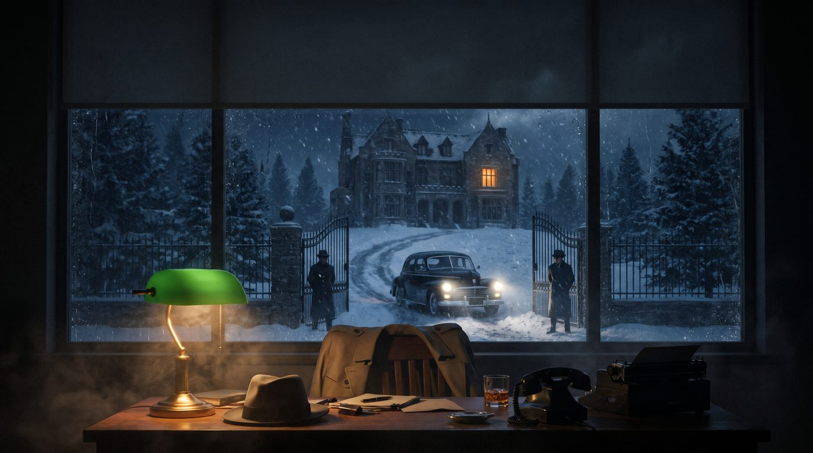
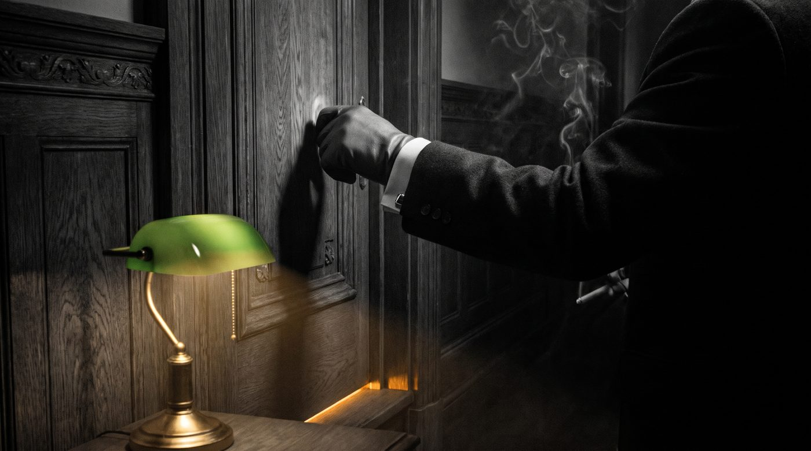
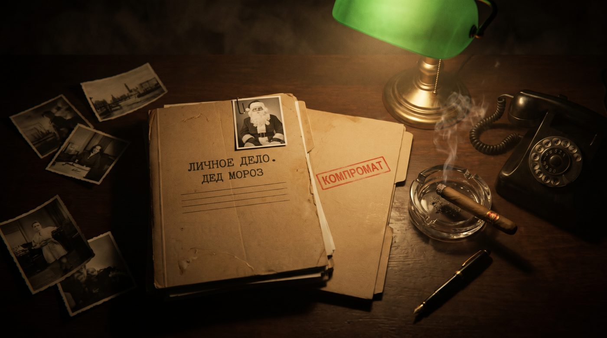
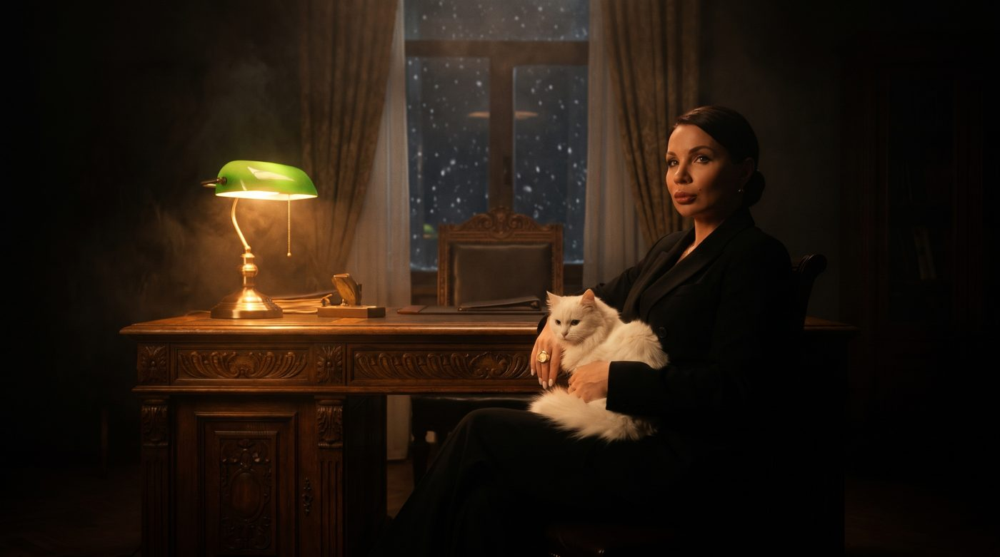
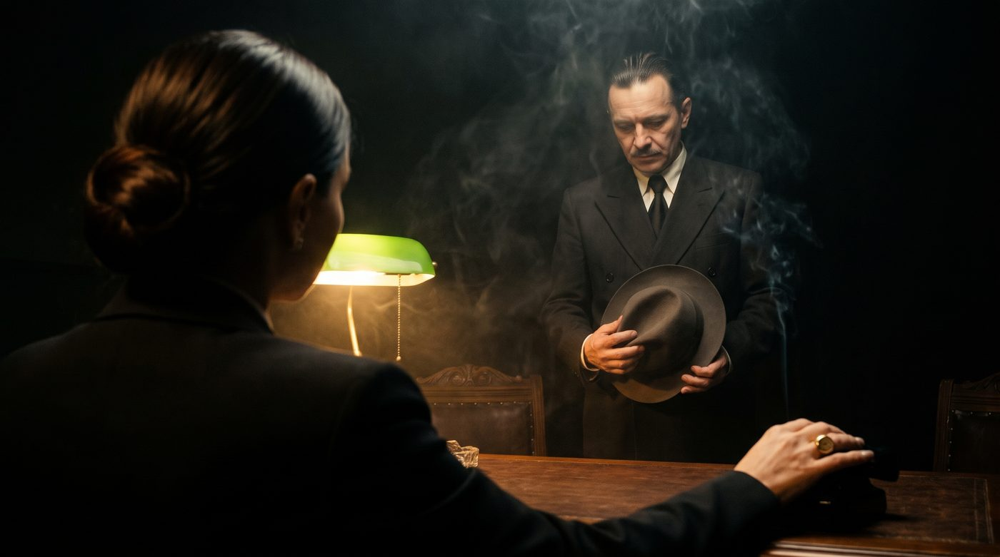
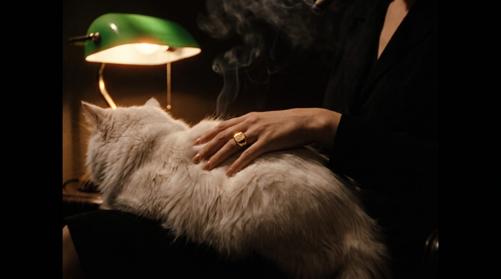
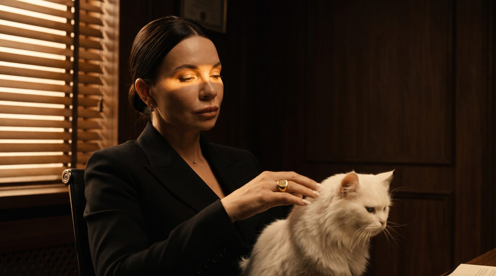
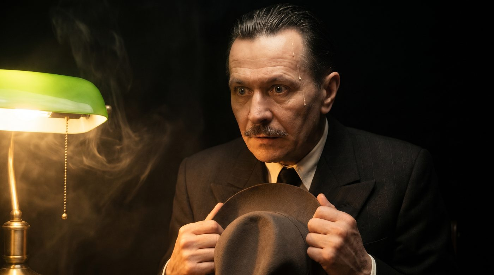
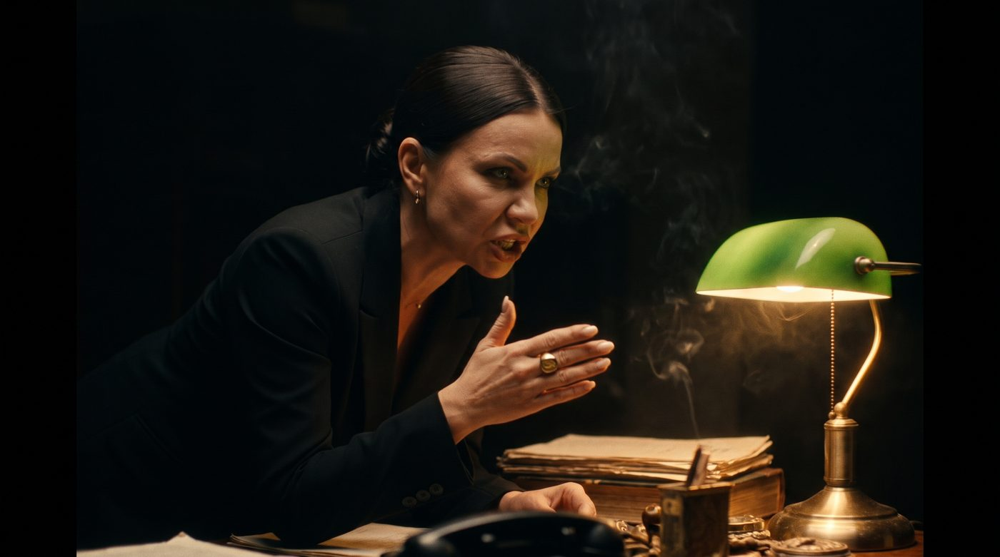
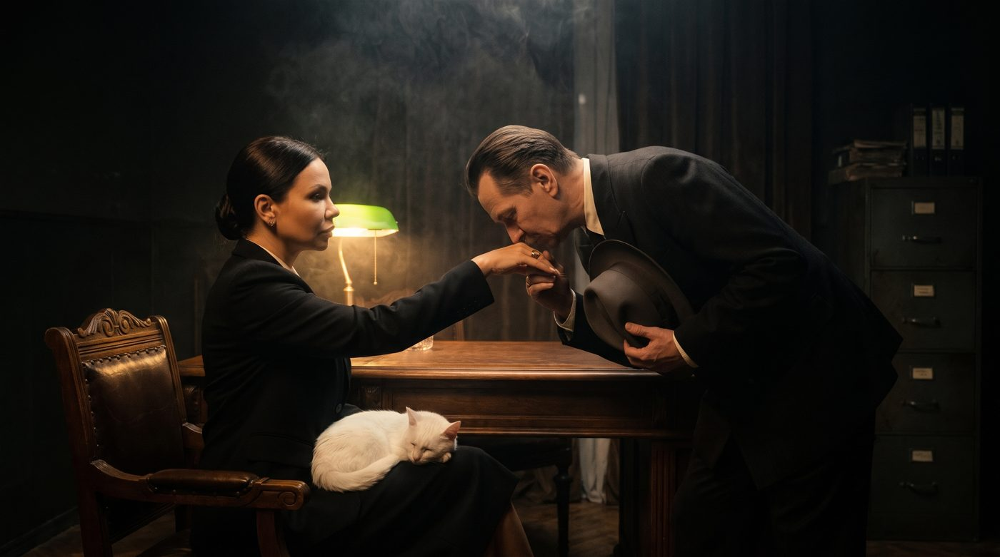

Кадр T1 · Заставка Columbia
Своя музыка заставки. Перевода нет.
Кадры по твоим правкам, пока картинки. После твоего ОК оживлю их в Veo и соберу видео. Кадр 9 убран, поцелуй перстня теперь в кадре 8.
Своя музыка заставки. Перевода нет.

Ночь, снег, к воротам подъезжает чёрная машина с фарами. Поверх киношным шрифтом проявляется дисклеймер «Все персонажи вымышлены. Любые совпадения с реальными людьми случайны», затем титр «КРЁСТНАЯ МАТЬ».
Перевод читает только «Крёстная мать»
♪ Вальс №3 вступает с первой секунды, громко

В тёмном коридоре виллы рука стучит в тяжёлую дверь, из-под неё полоска тёплого света.
⏱ Три стука: тук. тук. тук.
♪ Вальс тише

На столе под лампой папки «Личное дело. Дед Мороз» с фото и «Компромат», дымит сигара, чёрный дисковый телефон.
⏱ Тиканье часов
♪ Вальс тихо

Полутьма, горит только настольная лампа. Настя за огромным старинным столом, кот на коленях, за окном снег.
⏱ Тиканье, мурлыканье
♪ Вальс тихо

Спиной к нам Настя. Перед столом менеджер в костюме 40-х, шляпа в руках, голова опущена.
Менеджер: «Крёстная… У меня корпоратив двадцать восьмого. Пятьсот гостей. Мне нужен Дед Мороз». ⏱ С ботинок капает талый снег
♪ Вальс почти не слышно

Рука с перстнем гладит кота, перстень блестит в свете лампы.
⏱ Кот открывает один глаз
♪ Вальс уходит

Настя гладит кота и говорит, не глядя на него. Этот кадр тебе нравился, в видео сделаю его темнее.
Настя: «Ты приходишь ко мне пятнадцатого декабря… и просишь Деда Мороза. На самую горячую дату года». ⏱ Пауза, только тиканье
Без музыки

Сглатывает, по виску течёт пот.
⏱ Тиканье ускоряется
Без музыки

Живая Настя наклоняется к свету и говорит с холодной злостью.
Настя: «Но ты, сука, делаешь это… без уважения». ⏱ Тиканье замолкает
Без музыки

Настя за столом протягивает руку, менеджер наклоняется и целует перстень.
Настя: «Ладно. Я пойду тебе навстречу». ⏱ Кот фыркает на менеджера
♪ ТЕМА ЛЮБВИ вступает на поцелуе